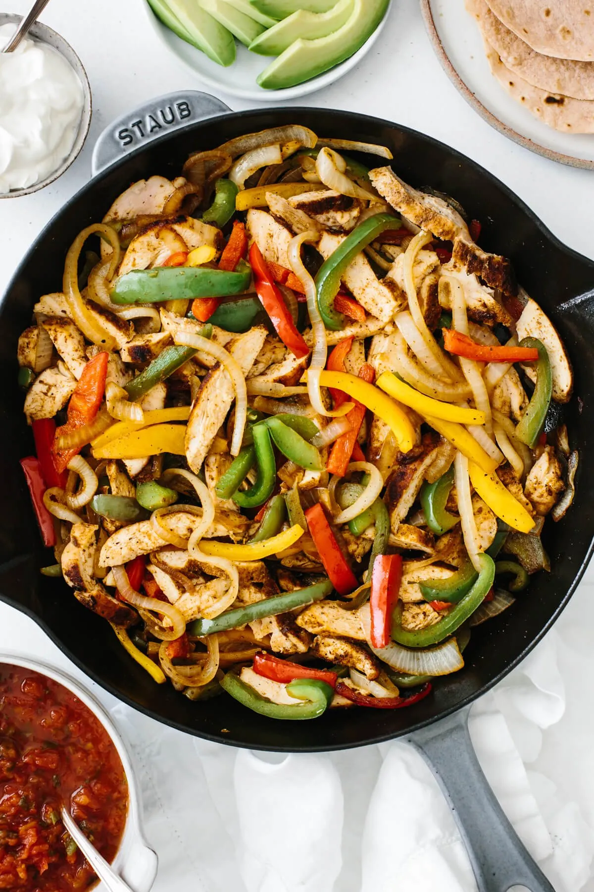

Description
A combination of chicken and bell peppers along with a ton of lime juice to make it extra juicy
Ingredients
- Fajuta seasoning
- Chicken
- Bell peppers
- Onions
- Lime juice
Steps
- Season the chicken with the fajita seasoning
- Cook the chiken on a large skillet with olive oil for about 7-8 minutes on each side
- While the chicken is cooking, cut the bell peppers and onions into thin strips
- Remove chicken and cut into strips and cook the peppers and onions in the same skillet until caramelized.
- Mix chicken back into skillet and add lime juice